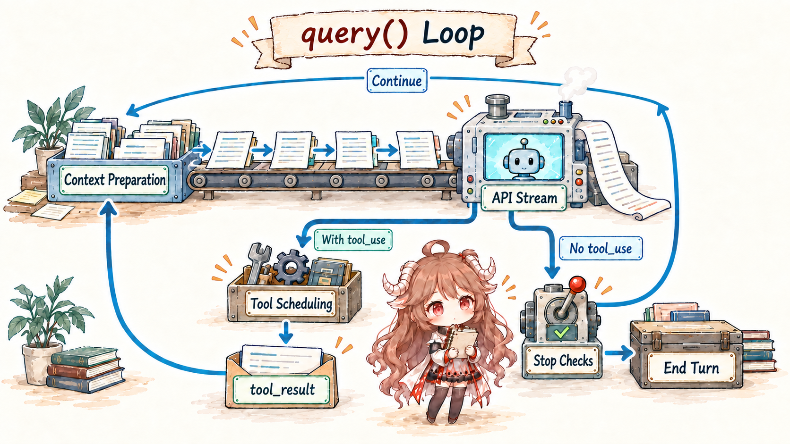
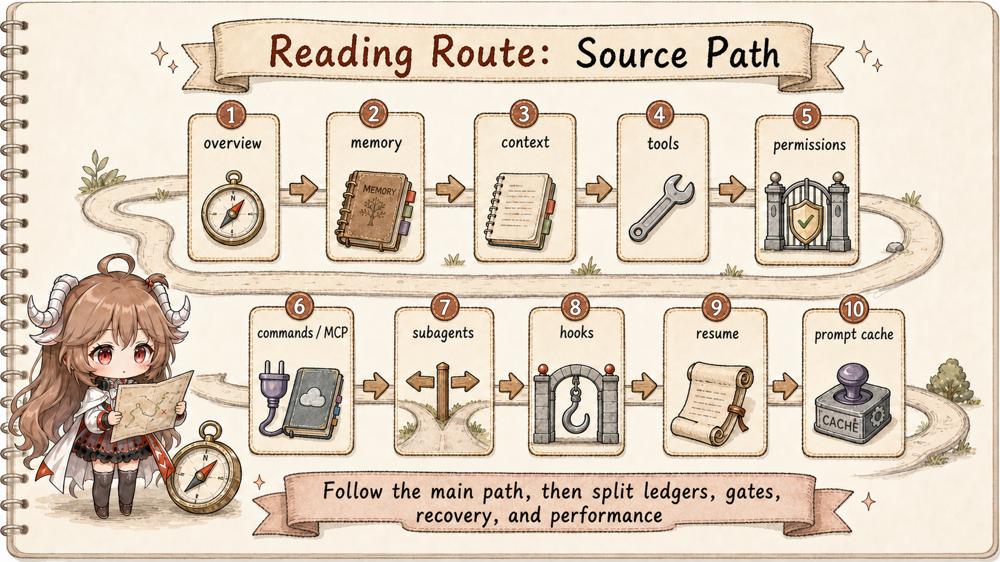

Imagine the user types: fix this failing test
. Claude Code does not pass that sentence straight to the model. The request is first separated from early-return CLI modes, enters the interactive app, gets ordered with slash commands and background notifications, is wrapped with system and user context, then finally reaches query().
That route matters because the codebase is layered. The CLI decides whether a normal agent session should even start. The command queue decides which piece of work gets the next turn. The REPL prepares memory, repository state, tool context, and permission callbacks. The query loop projects runtime state into a provider request. The tool layer turns tool_use into local side effects only after validation and permission checks. The transcript and resume paths keep enough state for a future session to continue.
The main invariant is this: Claude Code is not one big function that asks a model and runs whatever comes back. It is a set of gates. Each gate narrows what can happen next.
1. The seven gates on the normal route
A useful first map has seven checkpoints: CLI routing, command queue, REPL turn assembly, query(), model stream, tool execution, and persistence. The names are not decorative. They describe where the code changes shape.
| Gate | What changes there | Source to read first |
|---|---|---|
| CLI routing | Version, MCP host, remote-control, resume, and normal interaction are separated. | entrypoints/cli.tsx, main.tsx |
| Queue | User input, slash commands, task notifications, and orphaned permission requests become ordered commands. | commands.ts, messageQueueManager.ts |
| REPL assembly | System prompt, memory, repository state, tools, MCP clients, and permission functions are prepared. | screens/REPL.tsx, context.ts, Tool.ts |
| Query loop | The model-visible view is rebuilt before each provider call. | query.ts, utils/api.ts |
| Model stream | Text, thinking, tool_use, stop reasons, and API errors become runtime events. | query.ts, services/api/claude.ts |
| Tool gate | Tool names, schemas, permissions, concurrency, progress, and results are handled. | toolOrchestration.ts, toolExecution.ts |
| Record and resume | UI messages, transcript rows, content replacement, compact state, and resume metadata stay separate. | sessionStorage.ts, conversationRecovery.ts |
2. CLI is a router; the REPL is the main road
The CLI entry has several paths that return before the interactive agent starts. Some flags print information, some paths start MCP host behavior, and resume-related paths load older state. The normal coding conversation continues through main.tsx, where session config, commands, tools, MCP clients, and turn-complete callbacks are assembled.
The handoff to replLauncher.tsx is the boundary where a terminal command becomes an interactive runtime. From that point on, Claude Code can render progress, accept shortcuts, show permission prompts, and keep a local message model that is richer than one text input.
3. The queue makes interaction deterministic
A slash command, a natural-language prompt, a background notification, and a permission response are not the same thing, but they compete for the same turn. The queue manager gives them priority classes and FIFO order inside each class. Without that layer, a coding agent would feel random as soon as background work and user input overlap.

4. query() is the real agent loop
The REPL does not simply forward raw history. Before each model call, queryLoop() slices from the most recent compact boundary, applies tool-result budgeting, considers microcompact and context collapse paths, and builds the current model-visible view. What is saved locally and what is sent to the model are related, but they are not identical.
The API call contains more than messages. It carries the effective system prompt, thinking options, tools, MCP tools, agents, query source, task budget, cache policy, and permission context access. That is why a later article on prompt cache or tools must come back to this same loop.
5. A tool call is a proposal, not an execution
When the model emits tool_use, the runtime collects those blocks and routes them into the tool layer. runTools() separates calls that can safely run concurrently from calls that must remain serial. runToolUse() finds the tool, validates input, handles unknown-tool cases, checks permissions, reports progress, and packages the result back as tool_result.
This is the most important mental model for the rest of the series: the model proposes an action; the runtime decides whether that action exists, whether the arguments are valid, whether policy allows it, and how the result should return to the next turn.
6. Records are not one thing
The events shown on screen, the rows written to transcript storage, the content-replacement state, and the resume metadata serve different readers. The UI needs responsive rendering. The transcript needs a durable audit trail. Resume needs enough runtime state to reconstruct a workable session. Treating all of that as chat history
hides the most interesting engineering work.

7. What to remember before going deeper
First, every user-visible feature has a runtime boundary. Second, every model request is a projection, not a dump of all local state. Third, local side effects are guarded by tool contracts and permission policy. Fourth, resume is state reconstruction, not paste-old-chat-and-continue. With those invariants in place, the remaining articles become much easier to read.
Sources
The source-code claims in this article are based on the public mirror and the linked official documentation. Server-side behavior and private feature-gate policy are treated only as client-visible request shape.